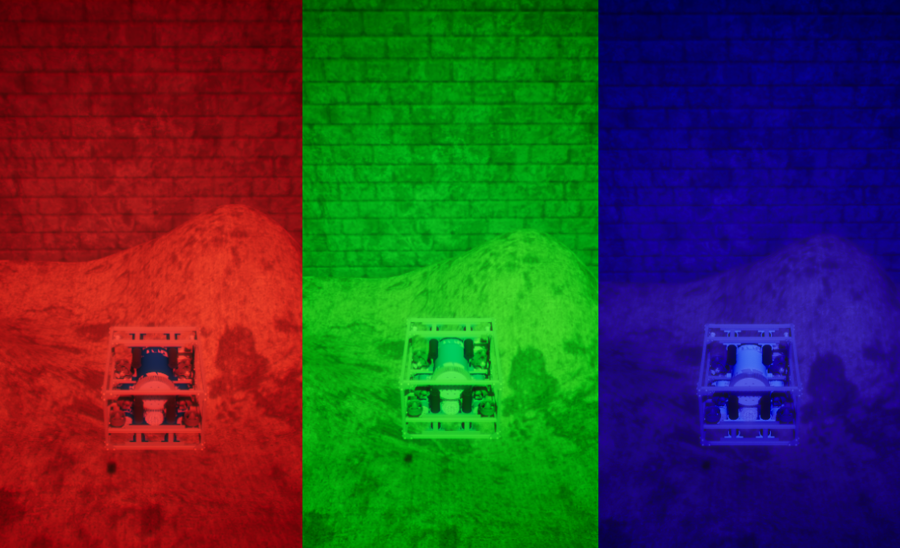
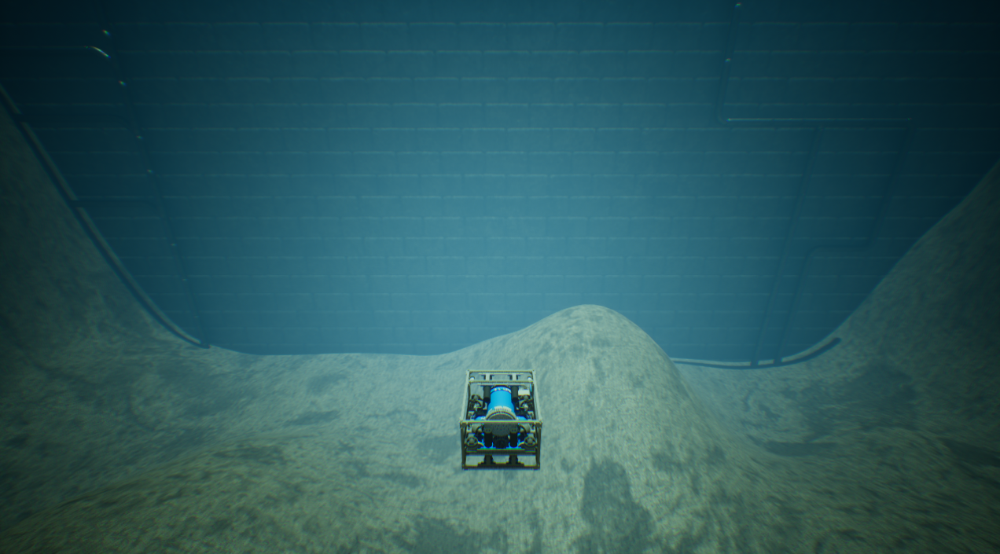
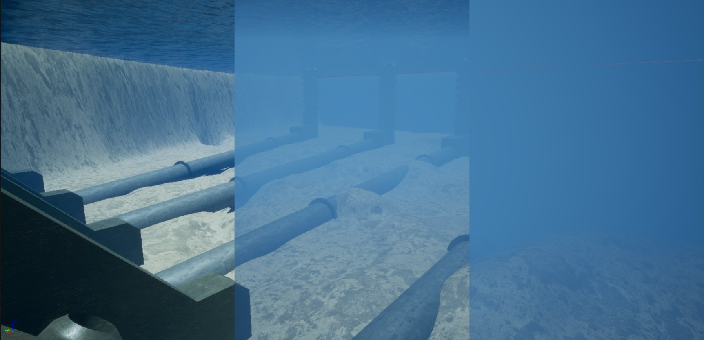

Water Appearance Commands
HoloOcean worlds have a water color command that can be called to make the water suit your needs - whatever they may be.
Water Color Command
You can use water color command while the simulation is running to change the water color with full RGB range.
Here are a couple of example water colors that can be configured:
Color configuration = (0.3, 0.75, 0.6)
Color configuration = (0.3, 0.4, 0.5)
Programmatically
Below is an example of using the water color command to change the water to red, green, or blue:
with holoocean.make("...") as env:
while True:
if 'r' in pressed_keys:
env.water_color(1, 0, 0)
if 'g' in pressed_keys:
env.water_color(0, 1, 0)
if 'b' in pressed_keys:
env.water_color(0, 0, 1)
Another example to set the custom colors shown in the two pictures above:
with holoocean.make("...") as env:
while True:
if 'u' in pressed_keys:
env.water_color(0.3, 0.75, 0.6) # first picture
if 'i' in pressed_keys:
env.water_color(0.3, 0.4, 0.5) # second picture
Water Fog Command
The water fog command controls underwater visibility by adjusting fog density, depth, and color.
You can configure the following parameters:
fogDensity: Controls the overall thickness of the fog. Range:
0.0 – 10.0fogDepth: Distance from the camera at which the fog effect begins. Range:
0.0 – 10.0(Default = 3.0)color_R: Red channel of the fog color. Range:
0.0 – 1.0(Default = 0.4)color_G: Green channel of the fog color. Range:
0.0 – 1.0(Default = 0.6)color_B: Blue channel of the fog color. Range:
0.0 – 1.0(Default = 1.0)
Programmatically
Here is an example of using the water fog command to achieve the visibility level shown in the middle of the image above:
with holoocean.make("...") as env:
while True:
env.water_fog(0.8) # sets the fog density to 0.8
Additionally, you can modify fog depth and color.
Note
For more information on how to use these commands, please refer to the API Documentation:
WaterColorCommand and WaterFogCommand.